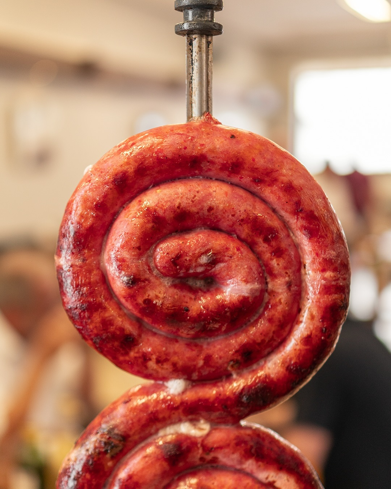
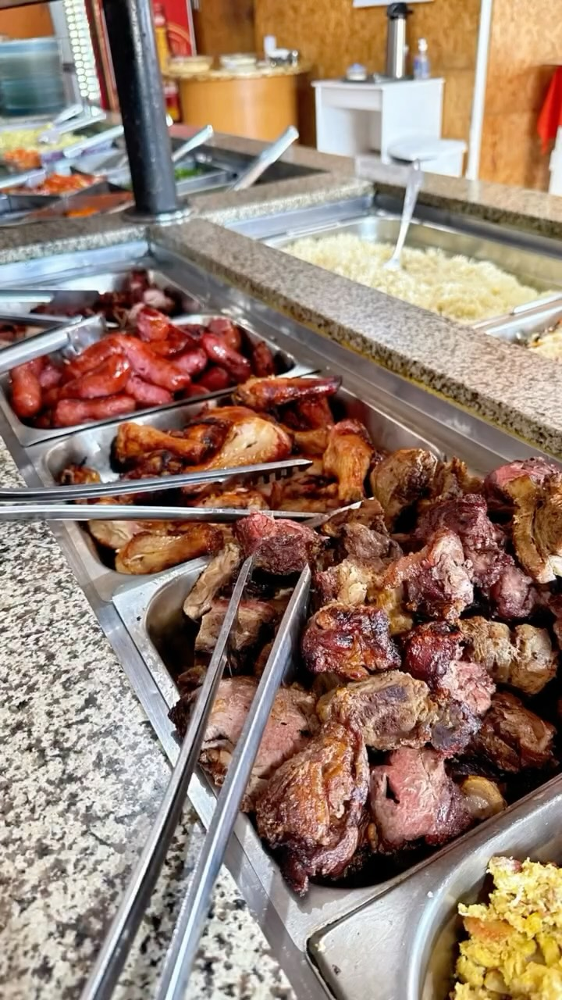
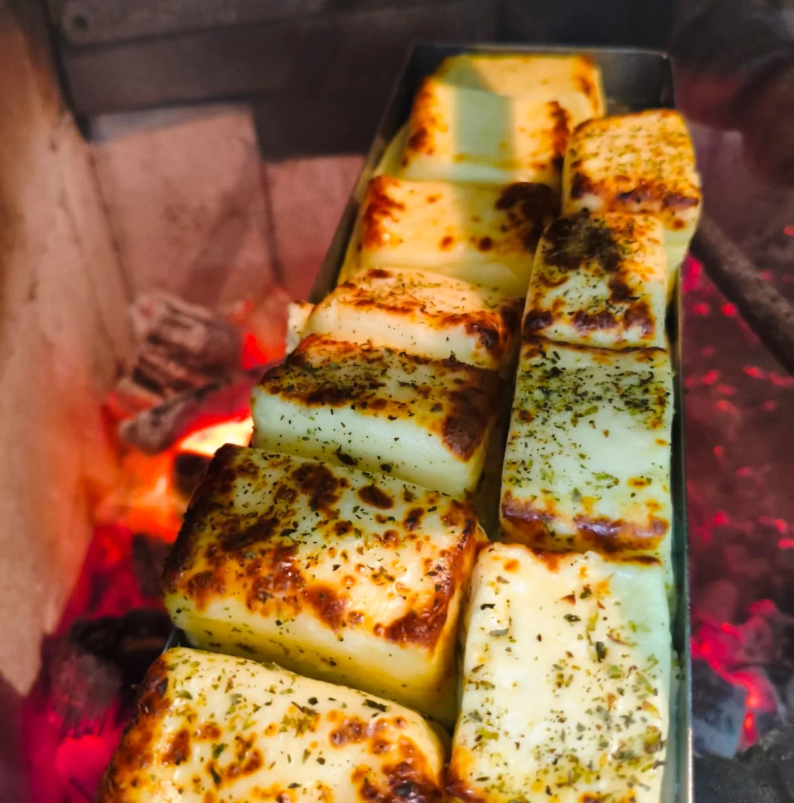

Picanha Premium
Picanha premium com sal grosso, assada lentamente na brasa de carvão.
Garopaba · Santa Catarina
Churrasco gaúcho na beira da estrada. Buffet livre, rodízio e delivery desde que Garopaba era só praia e pinheiro.

.webp)
Nossa história
A Brasa Gaúcha nasceu da paixão pelo churrasco de verdade — feito com carvão, paciência e amor. Na RSC-434, em Areias da Palhocinha, somos referência para quem busca carne de qualidade com o autêntico sabor do Sul.
Mais de 309 avaliações positivas no Google e nota 4.3. Nosso compromisso é simples: o melhor churrasco da região, sempre com carnes frescas e selecionadas.
Nossas Especialidades
Corte nobre, sal grosso e brasa de carvão
Assada lentamente por horas na brasa
Marinado em temperos especiais da casa

Toscana grelhada com ervas frescas

Alcatra ou contrafilé grelhado na perfeição

Grelhado na brasa, crocante por fora e cremoso por dentro
Buffet · Kg · Marmitas
11h – 14h30Delivery e Balcão
11h – 14h30Carnes à vontade na mesa
19h30 – 22h30Lanches e petiscos
18h – 23hNosso Cardápio
Picanha premium com sal grosso, assada lentamente na brasa de carvão.
Costela bovina assada por horas, desfiando na faca com suculência incomparável.
Coxa e sobrecoxa marinadas em temperos especiais da casa, grelhadas na perfeição.
Linguiça toscana artesanal, grelhada na brasa com ervas frescas.
Grelhado na brasa, crocante por fora e cremoso por dentro.
Espeto Corrido
19h30 – 22h30 Carnes à vontade servidas na mesa Tradicional
Tradicional
O famoso Xis com carne bovina, queijo, alface, tomate e molho especial da casa.

Xis com carne, bacon crocante, queijo derretido e todos os acompanhamentos.

Peito de frango grelhado, queijo, salada e molho especial no pão artesanal.
 Completo
Completo
Carne, frango, bacon, ovo, queijo e todos os acompanhamentos. O mais pedido!
Xis Artesanais
18h – 23h Servidos com batata fritaBuffet livre com variedade de saladas, acompanhamentos e carnes. Inclui arroz, feijão, farofa, vinagrete e muito mais.
Arroz, feijão, salada e uma carne
Arroz, feijão, farofa, salada, duas carnes
Porção grande para 2-3 pessoas
Horário: 11h – 14h30 | Pedidos: (48) 99942-7019
Galeria
309 avaliações no Google
Avaliações
"Melhor churrasco de Garopaba! A picanha derrete na boca e o atendimento é excelente. Voltarei sempre!"
"Fui no espeto corrido e fiquei impressionada com a qualidade das carnes. Ambiente agradável e ótimo custo-benefício."
"Costela gaúcha impecável! Assada do jeito certo, desmanchando. Recomendo muito para quem visita Garopaba."
"Ambiente lindo, mesas externas com vista incrível. As carnes são de primeira qualidade!"
Contato & Localização
RSC-434, Areias da Palhocinha
Garopaba – SC, 88495-000
Ter–Dom: 11h–23h
Segunda: Fechado